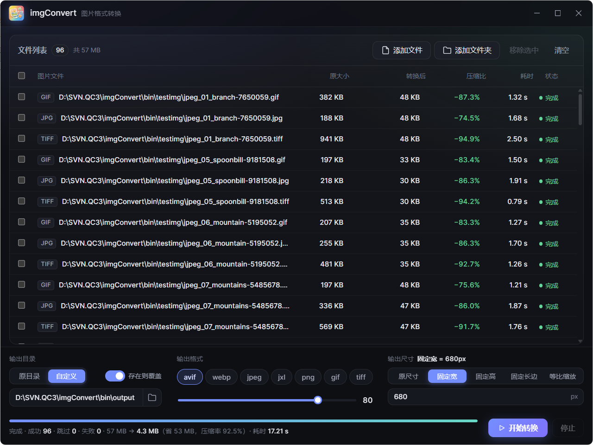

极速，快到飞起
单图转换以毫秒计，自动并发占满所有 CPU 核心，几百张图批量处理也不卡顿。底层 libvips，性能拉满。
本地运行 · 无需上传 · MIT 开源
桌面端图片批量格式转换工具。把图片或整个文件夹拖进来，选好格式，一键转换—— 毫秒级单图、自动占满所有 CPU 核心， 压得狠却看不出差别，目录结构原样保留，绝不丢文件。

// 01 — FEATURES
不是把单张转换循环几百遍，而是从并发、输出到容错，整套都为大批量场景重新设计。
单图转换以毫秒计，自动并发占满所有 CPU 核心，几百张图批量处理也不卡顿。底层 libvips，性能拉满。
直接拖进文件或整个文件夹，自动递归扫描多层子目录，不用手动一个个挑。
输出严格按原目录结构落盘，不同子文件夹里的同名图片各归各位、互不覆盖。告别扁平化导致的静默丢图。
质量滑块 0–100，各格式预置了「肉眼基本无差」的默认档，闭眼选也不会压成马赛克。
已转换成功的输出默认自动跳过，中断后重跑只补未完成的，随时可取消，不用从头再来。
每个文件实时显示原大小、输出大小、压缩率与耗时，效果一目了然，不是黑盒。
// 02 — FORMATS
手机拍的 HEIC、老图 BMP、现代的 AVIF 与 JXL，都能读；输出覆盖主流与现代两大阵营。
// 03 — HOW IT WORKS
把图片或文件夹拖进窗口，也可以点按钮选择。子目录会自动递归扫描。
选好输出格式、质量与尺寸。默认档即可，多数场景不用细调。
点「开始转换」，进度、成功 / 跳过 / 失败统计与压缩率实时呈现。
// 04 — DOWNLOAD
当前主要提供 Windows 版本，免安装、双击即运行；macOS / Linux 可从源码构建。
下载对应平台的可执行文件，双击即可运行，无需安装。更新也第一时间发布在这里。
前往 ReleasesWindows 版本的备用下载通道，适合 GitHub 访问不畅时使用。
需要 Go 1.25+、Node.js 与 Wails v3 CLI：
git clone https://github.com/yl365/imgConvert.git
cd imgConvert
wails3 dev # 开发预览（热重载）
wails3 build # 构建生产可执行文件// 05 — UNDER THE HOOD